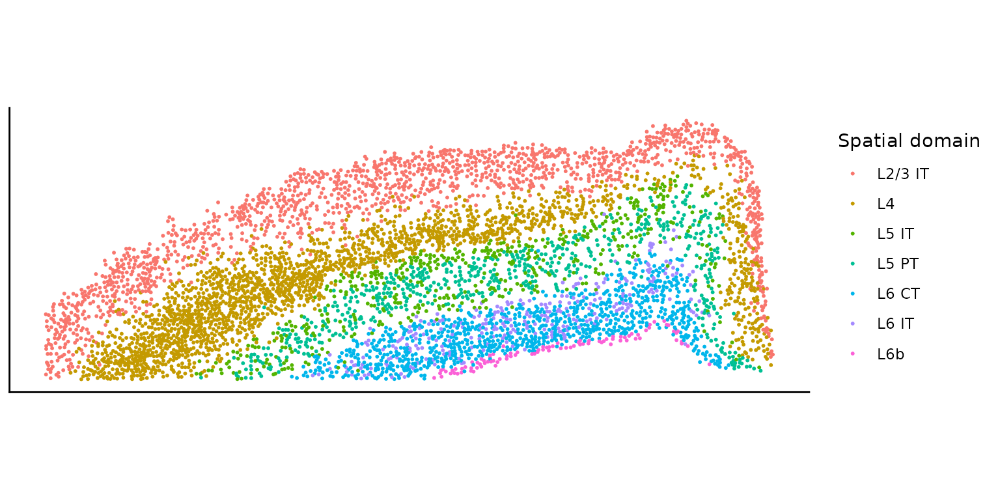
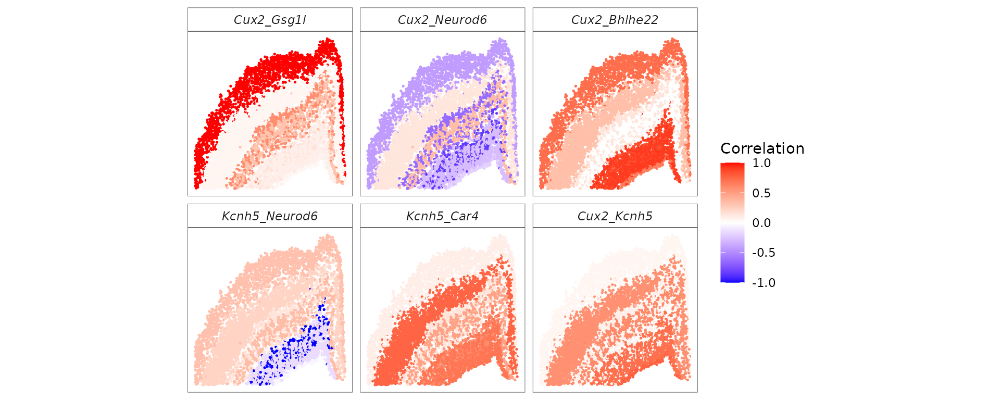

Modeling spatially varying gene correlation across spatial domains
Chenxin
(Flora) Jiang
Department of Statistics and Data Science, University
of California, Los Angeles
cflorajiang@g.ucla.edu
28 June 2026
Source:vignettes/spCorr-domain.Rmd
spCorr-domain.Rmd
library(spCorr)
library(Seurat)
library(purrr)
library(tibble)
library(ggplot2)
library(dplyr)
library(tidyr)
library(viridis)
library(MorphoGAM)
library(stats)
library(utils)Introduction
This tutorial demonstrates how to use spCorr to (i) infer spot-level gene–gene correlations for specified gene pairs, and (ii) identify gene pairs exhibiting spatially varying correlation (SVC) patterns across spatial domains.
Prepare input data
In this example, we analyze a subset of the mouse brain cortex dataset generated using the 10x Xenium platform. The dataset is provided by 10x Genomics as part of the “Fresh Frozen Mouse Brain for Xenium Explorer Demo,” available at 10x Genomics.
## Load example ST data
# It contains a Seurat object
tf <- tempfile(fileext = ".rds")
utils::download.file("https://ndownloader.figshare.com/files/66021356", tf, mode = "wb")
xenium.obj <- readRDS(tf)
unlink(tf)
xenium.obj <- UpdateSeuratObject(xenium.obj)
xenium.obj$ccf_region <- gsub("1|2/3|4|5|6a|6b", "", xenium.obj$ccf) %>%
as.factor() %>%
droplevels()
# Subset celltypes
celltypes <- c("L2/3 IT", "L4", "L5 IT", "L5 PT", "L6 CT", "L6 IT", "L6b")
xenium_sub.obj <- xenium.obj[, xenium.obj$ensembled.celltype1 %in% celltypes]Now we prepare the input data for spCorr analysis.
# Count matrix
count_mat <- xenium_sub.obj[["Xenium"]]$counts
# Covariate matrix
cov_mat <- cbind(GetTissueCoordinates(xenium_sub.obj), xenium_sub.obj@meta.data)
rownames(cov_mat) <- colnames(count_mat)We extract the spatial domain information from the covariate matrix. The spatial domain information is based on the CCF region annotations provided in the Seurat object.
plot_domain <- ggplot(cov_mat, aes(x = x, y = y, color = ensembled.celltype1)) +
geom_point(size = 0.4) +
labs(color = "Spatial domain") +
coord_fixed() +
scale_y_reverse() +
theme_classic() +
theme(
axis.title = element_blank(),
axis.text = element_blank(),
axis.ticks = element_blank()
)
plot_domain
In this tutorial, we will focus on a subset of 10 genes that are highly expressed in the L2/3 IT cell type. We will analyze all possible gene pairs among these 10 genes.
Run spCorr
We now apply spCorr to infer spot-level gene–gene
correlations for the selected gene pairs and to identify gene pairs with
spatially varying correlation (SVC) pattern across the spatial domains
(associated with the cell types ensembled.celltype1).
res <- spCorr(count_mat,
gene_list,
gene_pair_list,
cov_mat,
formula1 = "1",
formula2 = "ensembled.celltype1",
return_pi = TRUE,
ncores = 5,
seed = 123
)
#> Start Marginal Fitting for 10 genes
#> Start Cross-Product Fitting for 45 gene pairsVisualize spot-level correlations
We next visualize the inferred spot-level correlations and SVC patterns for specific gene pairs.
# Use the top gene pairs with the smallest FDR values for visualization
top_pairs <- names(sort(res$fdr))[1:6]
# Assemble spot-level correlation estimates and their confidence intervals
rho_df_long <- purrr::map_dfr(top_pairs, function(gp) {
tibble::tibble(
x = cov_mat$x, y = cov_mat$y, gene_pair = gp,
rho = as.numeric(res$res_local[gp, ])
)
}) %>%
dplyr::mutate(gene_pair = factor(gene_pair, levels = top_pairs))
# Visualize the estimated spot-level correlations across 2D space
p_corr_d <- ggplot(rho_df_long, aes(x = x, y = y, color = rho)) +
geom_point(size = 0.3) +
facet_wrap(~gene_pair, nrow = 2) +
coord_fixed() +
scale_y_reverse() +
scale_color_gradient2(low = "blue", mid = "white", high = "red", midpoint = 0, limits = c(-1, 1), name = "Correlation") +
theme_minimal() +
theme(
aspect.ratio = 1,
legend.position = "right",
axis.title = element_blank(),
axis.text = element_blank(),
axis.ticks = element_blank(),
panel.grid = element_blank(),
panel.border = element_rect(color = "black", fill = NA, linewidth = 0.2),
strip.background = element_rect(color = "black", fill = NA, linewidth = 0.2),
strip.text.x = element_text(face = "italic")
)
p_corr_d
Session information
sessionInfo()
#> R version 4.2.3 (2023-03-15)
#> Platform: x86_64-pc-linux-gnu (64-bit)
#> Running under: Ubuntu 22.04.5 LTS
#>
#> Matrix products: default
#> BLAS: /usr/lib/x86_64-linux-gnu/openblas-pthread/libblas.so.3
#> LAPACK: /usr/lib/x86_64-linux-gnu/openblas-pthread/libopenblasp-r0.3.20.so
#>
#> locale:
#> [1] LC_CTYPE=en_US.UTF-8 LC_NUMERIC=C
#> [3] LC_TIME=en_US.UTF-8 LC_COLLATE=en_US.UTF-8
#> [5] LC_MONETARY=en_US.UTF-8 LC_MESSAGES=en_US.UTF-8
#> [7] LC_PAPER=en_US.UTF-8 LC_NAME=C
#> [9] LC_ADDRESS=C LC_TELEPHONE=C
#> [11] LC_MEASUREMENT=en_US.UTF-8 LC_IDENTIFICATION=C
#>
#> attached base packages:
#> [1] stats graphics grDevices utils datasets methods base
#>
#> other attached packages:
#> [1] MorphoGAM_1.0.0 viridis_0.6.5 viridisLite_0.4.2 tidyr_1.3.2
#> [5] dplyr_1.1.4 ggplot2_4.0.1 tibble_3.3.1 purrr_1.2.1
#> [9] Seurat_5.4.0 SeuratObject_5.3.0 sp_2.2-0 spCorr_1.0.0.0000
#> [13] BiocStyle_2.26.0
#>
#> loaded via a namespace (and not attached):
#> [1] spatstat.univar_3.1-6 spam_2.11-3 systemfonts_1.3.1
#> [4] plyr_1.8.9 igraph_2.2.1 lazyeval_0.2.2
#> [7] nanonext_1.7.2 splines_4.2.3 RcppHNSW_0.6.0
#> [10] listenv_0.10.0 scattermore_1.2 digest_0.6.39
#> [13] gratia_0.11.1 invgamma_1.2 htmltools_0.5.9
#> [16] SQUAREM_2021.1 magrittr_2.0.4 tensor_1.5.1
#> [19] cluster_2.1.6 ROCR_1.0-12 globals_0.19.1
#> [22] dimRed_0.2.7 matrixStats_1.5.0 pkgdown_2.2.0
#> [25] spatstat.sparse_3.1-0 princurve_2.1.6 ggrepel_0.9.6
#> [28] textshaping_1.0.4 xfun_0.56 jsonlite_2.0.0
#> [31] progressr_0.18.0 spatstat.data_3.1-9 survival_3.7-0
#> [34] zoo_1.8-15 ape_5.8-1 glue_1.8.1
#> [37] DRR_0.0.4 polyclip_1.10-7 gtable_0.3.6
#> [40] kernlab_0.9-33 future.apply_1.20.1 abind_1.4-8
#> [43] scales_1.4.0 spatstat.random_3.4-4 miniUI_0.1.2
#> [46] Rcpp_1.1.1 xtable_1.8-4 reticulate_1.44.1
#> [49] dotCall64_1.2 tweedie_2.3.5 truncnorm_1.0-9
#> [52] htmlwidgets_1.6.4 httr_1.4.7 RColorBrewer_1.1-3
#> [55] ica_1.0-3 pkgconfig_2.0.3 farver_2.1.2
#> [58] sass_0.4.10 uwot_0.2.4 deldir_2.0-4
#> [61] labeling_0.4.3 tidyselect_1.2.1 rlang_1.1.7
#> [64] reshape2_1.4.5 later_1.4.5 tools_4.2.3
#> [67] cachem_1.1.0 mirai_2.5.3 cli_3.6.6
#> [70] generics_0.1.4 ggridges_0.5.7 evaluate_1.0.5
#> [73] stringr_1.6.0 fastmap_1.2.0 yaml_2.3.12
#> [76] ragg_1.5.0 goftest_1.2-3 knitr_1.51
#> [79] fs_2.1.0 fitdistrplus_1.2-6 RANN_2.6.2
#> [82] pbapply_1.7-4 future_1.69.0 nlme_3.1-164
#> [85] mime_0.13 mvnfast_0.2.8 compiler_4.2.3
#> [88] rstudioapi_0.18.0 ggokabeito_0.1.0 plotly_4.12.0
#> [91] png_0.1-8 spatstat.utils_3.2-1 bslib_0.10.0
#> [94] stringi_1.8.7 desc_1.4.3 RSpectra_0.16-2
#> [97] lattice_0.22-6 Matrix_1.6-5 vctrs_0.7.1
#> [100] pillar_1.11.1 lifecycle_1.0.5 BiocManager_1.30.27
#> [103] spatstat.geom_3.7-0 lmtest_0.9-40 jquerylib_0.1.4
#> [106] RcppAnnoy_0.0.23 data.table_1.18.4 cowplot_1.2.0
#> [109] irlba_2.3.7 httpuv_1.6.16 patchwork_1.3.2
#> [112] R6_2.6.1 bookdown_0.46 promises_1.5.0
#> [115] KernSmooth_2.23-24 gridExtra_2.3 parallelly_1.46.1
#> [118] codetools_0.2-20 dichromat_2.0-0.1 gtools_3.9.5
#> [121] fastDummies_1.7.5 MASS_7.3-58.2 CVST_0.2-3
#> [124] withr_3.0.2 sctransform_0.4.3 mgcv_1.9-3
#> [127] parallel_4.2.3 grid_4.2.3 rmarkdown_2.30
#> [130] ashr_2.2-63 S7_0.2.1 otel_0.2.0
#> [133] Rtsne_0.17 mixsqp_0.3-54 spatstat.explore_3.7-0
#> [136] shiny_1.12.1